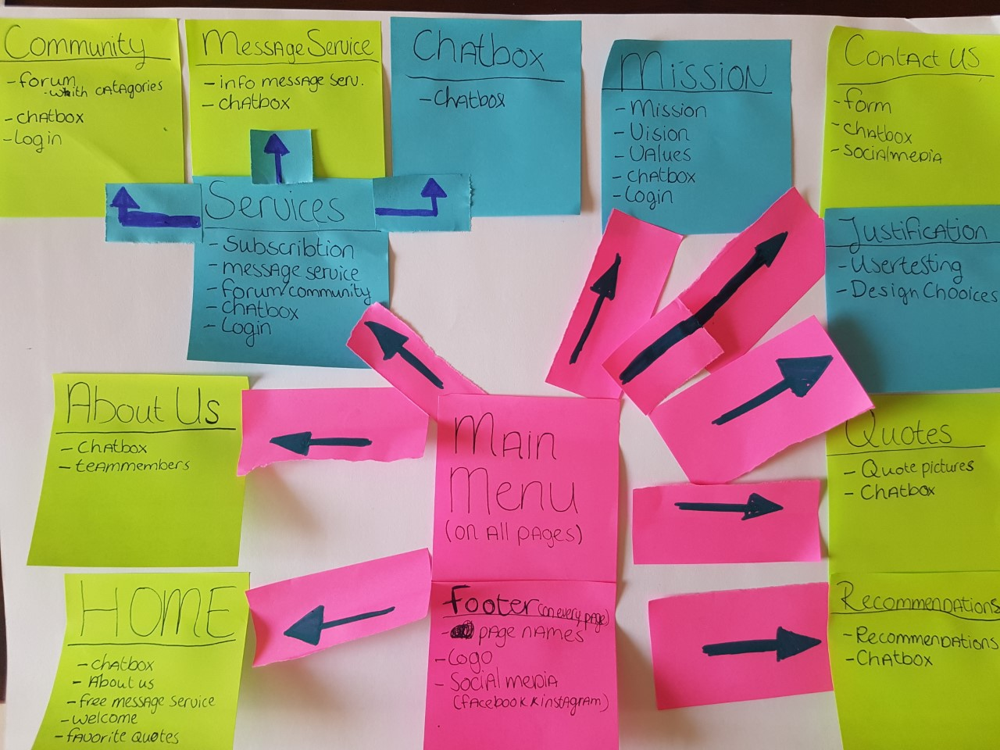
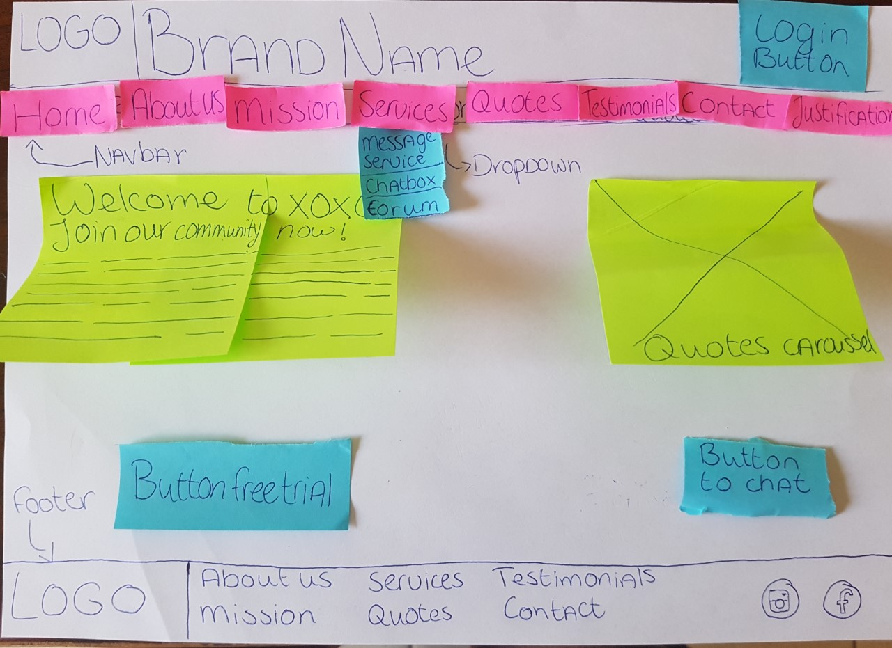
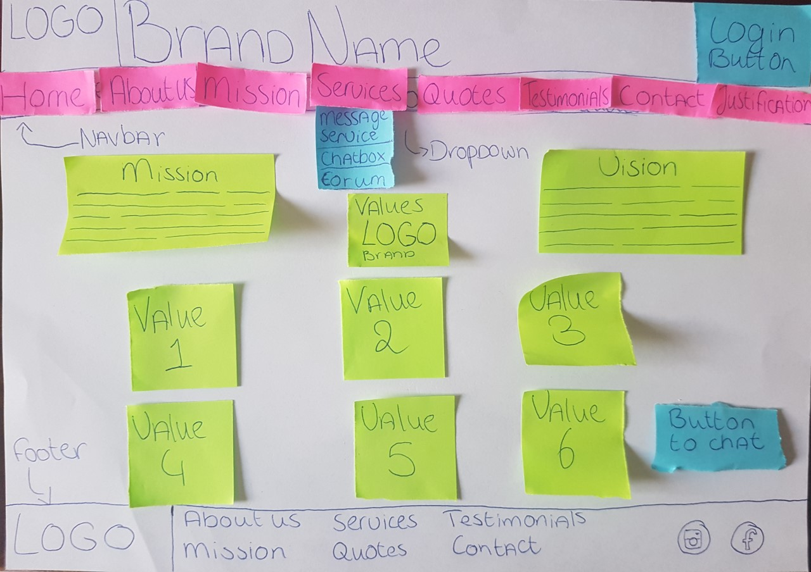
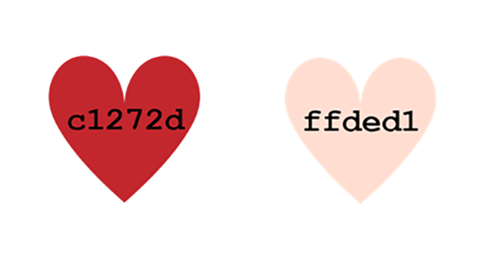
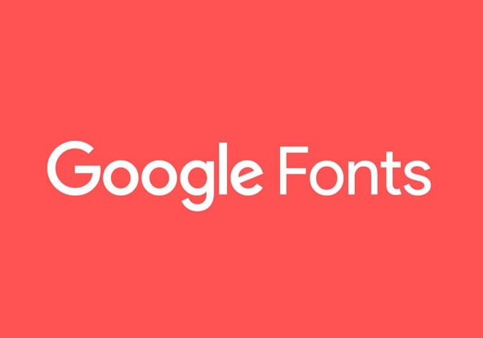

On the website we have decided to flip the colors. At first the background of the website was red and the navigation bar and footer nude. We changed it now to a pink background and red navigation bar and footer, we did this to bring more calmness to the page and when we would make use of a button we can use the color red this makes it more pop on the page.

Flow Diagram V1
"During the development of our website we have chosen to make two different flow diagrams. This is the first flow diagram that we group created before the user testing.

Flow Diagram V2
"This is the final flow diagram. We adjusted the flow diagram with the recommendations and feedback during the user testing. The adjustments are visible with blue sticky notes in the picture. The main change was a new page namely the services page, this page explains all the services that XOXO offers."

Wireframe Landing Page
"For the landing page we have created a wireframe on paper with sticky notes. The green picture on the right is an carousel with quotes."

Wireframe Mission Page
"For the mission page we have created it on paper as well. The values that are mentioned with the green sticky notes will all be displayed as logos. "

Used Colors
"On the website we made use of the two colours mentioned within the picture. We chose this particular colour red because it symbolizes the colour of a heart and love, our brand is all about loving yourself. We also chose for a pink/nude colour because that symbolizes a skintone of humans, it is all about loving yourself so also your body."

Google Font
"At first, we had “Bebas Neue” font, because that is the font we chose when developing our brand in the roadmap. Once we started working on the website, we realized the font does not fit with our brand style. Another font that was in our Brand Road Map was Courier New but this font was not available within Google fonts or via Adobe. Therefore, we changed the font into Courier… "
"At first, we had “Bebas Neue” font, because that is the font we chose when developing our brand in the roadmap. Once we started working on the website, we realized the font does not fit with our brand style. Another font that was in our Brand Road Map was Courier New. Therefore, we changed the font into Courier Prime, because Courier New was not available on Google Fonts."